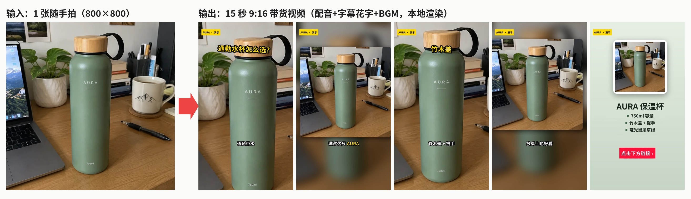
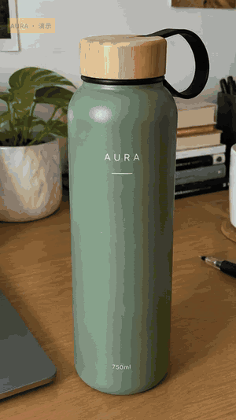
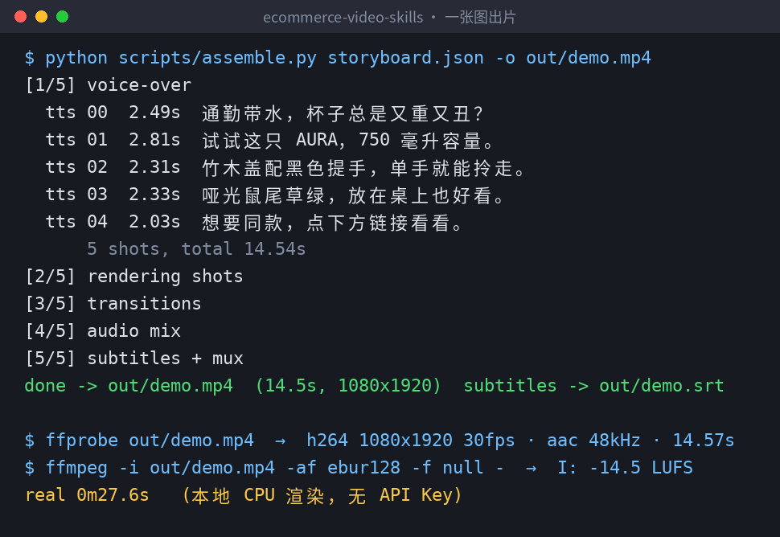
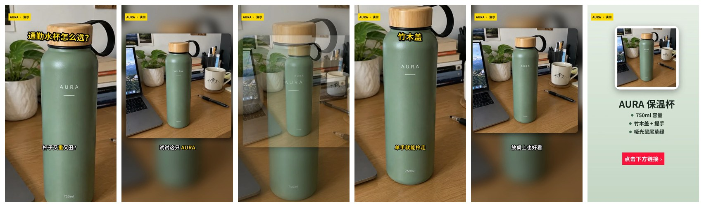
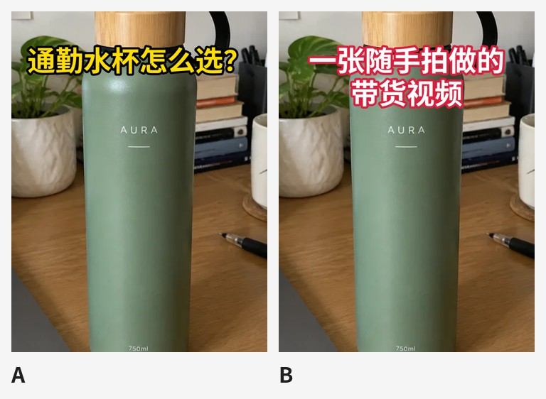

只用 1 张随手拍，在 Claude Code 里做出 15 秒抖音带货视频（配音 + 字幕花字 + BGM，本地出片）
项目地址：xianyu110/ecommerce-video-skills （MIT，12 个电商短视频 Agent Skills）
本文所有成片、截图都是在一台普通 Linux 机器上用仓库脚本实测跑出来的，命令可以直接复制。
先看结果。左边是输入，一张 800×800 的桌面随手拍；右边是输出，一条 14.5 秒的 9:16 竖屏带货视频：

动图预览（GIF 压缩过，原片是 1080×1920 / 30fps，[点这里下载 MP4](<

整条视频里只有一张素材图：开场的推近、中段的模糊背景加小画面、顶部竹木盖的下移镜头，都是同一张图用不同的 motion / fit 参数做出来的；结尾卡也是脚本用这张图自动排的版。
一、为什么要用「Skill」做带货视频
让大模型写带货脚本不难，难在后面那几步：
- 它写完分镜，你还得自己开剪映一镜一镜拖 ；
- 配音和字幕要对齐，改一句台词就得重新对一遍时间轴；
- 抖音 9:16、小红书 3:4、淘宝主图视频 1:1，每个平台再导一遍；
- 口播里一不小心就写出「最」「第一」「100%」这类广告法风险词。
ecommerce-video-skills 的做法是把这条流水线拆成 12 个 Agent Skill（一个文件夹一个 SKILL.md，可选附带脚本），其中「剪辑」这一步交给仓库里的 Python + ffmpeg 脚本真正执行。agent 负责「想」（钩子、分镜、台词），脚本负责「做」（配音、镜头、字幕、混音、导出）。
二、安装（2 分钟）
# 方式一：skills CLI 一行装
npx skills add xianyu110/ecommerce-video-skills
# 方式二：Claude Code 插件市场
/plugin marketplace add xianyu110/ecommerce-video-skills
# 方式三：手动复制（Codex / Cursor 同理）
git clone https://github.com/xianyu110/ecommerce-video-skills.git && cd ecommerce-video-skills
mkdir -p ~/.claude/skills && cp -r skills/* ~/.claude/skills/ # Claude Code
mkdir -p ~/.codex/skills && cp -r skills/* ~/.codex/skills/ # Codex
pip install -r requirements.txt # pillow / numpy / edge-tts；另需 ffmpeg（带 libass）和中文字体
每个 skill 文件夹自带它需要的脚本，互不依赖，只复制用得到的也行。
三、Step 1：让 agent 写 3 秒钩子
在 Claude Code 或 Codex 里直接说：
用 hook-3s-script 给这个保温杯写 8 个前三秒开场，标出推荐 Top 3。
真实卖点只有：750ml、竹木盖带提手、哑光鼠尾草绿。
hook-3s-script 里写死了几条规则，agent 会照着执行：
- 9 种钩子类型（痛点提问、反差、结果先行、数字、场景代入、错误示范、对比、第一人称、悬念），每条用不同类型，方便 A/B；
- 每条 ≤18 个汉字 （中文语速约 4–5 字/秒，3 秒说完），花字 ≤10 字；
- 第一帧必须是商品或痛点画面，不放 logo 片头；
- 禁用「最、第一、顶级、国家级、100%、根治」等绝对化用语，只能用你确认过的卖点 。
我这里只给了 3 个能从照片上直接看到的卖点（瓶身印着 750ml、竹木盖、提手、颜色），所以后面的口播里没有任何「保冷 24 小时」之类没测过的说法。最后选的开场是痛点提问型：「通勤带水，杯子总是又重又丑？」
四、Step 2：15 秒分镜 → storyboard.json
接着说：
用 selling-point-storyboard 按 ./assets/photo.webp 做一条 15 秒抖音分镜，只有这一张图，输出 storyboard.json
skill 里的 15 秒结构是：钩子(1) → 产品亮相(1) → 卖点×2–3 → 行动号召(1)，共 5–6 镜 ，并且要求「一镜一信息」、总台词字数 ≈ 时长 × 4.5。素材只有一张图时，skill 给的办法是「同一张图用不同 motion / fit 做两镜」。按这个模板整理出来的分镜如下（完整文件就是本文附带的 storyboard.json）：
{
"voice": "zh-CN-YunxiNeural", "rate": "+12%", "bgm": "auto", "tag": "AURA · 演示",
"shots": [
{"image": "assets/photo.webp", "fit": "cover", "motion": "punch", "transition": "slideup",
"line": "通勤带水，杯子总是又重又丑？", "sub": "通勤带水|杯子又**重**又丑？", "title": "通勤水杯怎么选？"},
{"image": "assets/photo.webp", "fit": "blur", "motion": "zoom_in", "transition": "fade",
"line": "试试这只 AURA，750 毫升容量。", "sub": "试试这只 **AURA**|750ml 容量"},
{"image": "assets/photo.webp", "fit": "cover", "motion": "pan_down", "transition": "slideleft",
"line": "竹木盖配黑色提手，单手就能拎走。", "sub": "竹木盖 + 提手|**单手就能拎走**", "title": "竹木盖"},
{"image": "assets/photo.webp", "fit": "blur", "motion": "zoom_out", "transition": "fade",
"line": "哑光鼠尾草绿，放在桌上也好看。", "sub": "哑光**鼠尾草绿**|放桌上也好看"},
{"image": "assets/end-card.png", "motion": "zoom_in", "min": 3.0,
"line": "想要同款，点下方链接看看。", "sub": "", "cta": "点击下方链接 ›"}
]
}
几个字段说明一下：
| 字段 | 作用 |
|---|---|
line |
配音文本。镜头时长 = 配音时长 + 0.15s 前导 + 留白，不用手动对时间轴 |
sub |
字幕；**词** 是关键词高亮（黄色），| 是分行；"" 表示这镜不出字幕 |
title / cta |
弹出花字 / 底部行动号召按钮 |
motion |
punch（0.35 秒快速推近，开场钩子专用）、zoom_in、zoom_out、pan_*、static |
fit |
cover 裁满；blur 模糊背景 + 完整画面（方图放进竖屏时避免裁掉商品） |
结尾卡用仓库里的 make_cards.py 生成，文字是 PIL 本地渲染，中文不会糊：
python scripts/make_cards.py --image assets/photo.webp --name "AURA 保温杯" \
--points "750ml 容量|竹木盖 + 提手|哑光鼠尾草绿" -o assets/end-card.png
五、Step 3：一条命令出片
python scripts/assemble.py storyboard.json -o out/demo.mp4

脚本分 5 步走：edge-tts 逐句配音 → 每镜 Ken Burns 渲染 → xfade 转场 → 配音 + BGM 混音 → 字幕烧录并封装。我这台机器上总共 27.6 秒跑完。用 ffprobe 和 ebur128 复查成片：
- H.264 1080×1920，30fps；AAC 48kHz；时长 14.57 秒
- 整体响度 -14.5 LUFS （脚本做了两遍 loudnorm，目标约 -14 LUFS）
- 同时输出
out/demo.srt，8 条字幕，可以单独上传给平台
几个实现细节，是我觉得这个仓库比「提示词合集」靠谱的地方：
- Ken Burns 用逐帧 scale + crop ，比 ffmpeg 自带的 zoompan 抖动小；
- 转场不吃配音 ：每镜多渲染半个转场长度，配音按镜头起点对齐；
- BGM 自动闪避 ：
bgm: "auto"是make_bgm.py实时合成的免版权音乐，有人声时再压 10dB； - 想先看节奏不等配音，可以
--tts none按字数估时离线预览。
抽 6 帧看一下（左上角黄色贴纸是 tag 字段，提醒这是演示素材）：

六、Step 4：一键导出抖音 / 小红书 / 淘宝三个规格
python scripts/export_platform.py out/demo.mp4 --platform douyin xiaohongshu taobao-main
python scripts/export_platform.py out/demo.mp4 --safe-preview out/safe.png
实测输出：
| 平台 | 分辨率 | 大小 |
|---|---|---|
| douyin | 1080×1920 | 4.36 MB |
| xiaohongshu | 1080×1440（3:4） | 3.37 MB |
| taobao-main | 1080×1080（1:1） | 2.59 MB |
比例不同时默认模糊填充（--mode blur），也可以 --mode crop 裁切。--safe-preview 会在一帧上叠出容易被遮挡的区域（顶部状态栏、右侧按钮、底部文案/商品卡），用来检查字幕有没有压到 UI——这是经验值，脚本自己也提示最终以真机为准：
七、Step 5：封面 A/B
python scripts/cover_ab.py out/demo.mp4 --images build/still00.png build/still02.png \
--titles "通勤水杯怎么选？|一张随手拍做的带货视频"
--images 用的是渲染过程中留下的干净底图（不带字幕），新标题叠上去不会和原字幕打架：

八、踩坑与建议
- 第一次生成的结尾卡有两个按钮 ：我一开始给
make_cards.py也传了--cta，和 storyboard 里的cta叠在一起。去掉其中一个即可——这也说明渲染完一定要抽帧看一眼（skill 的检查清单里就有这一步）。 - 只有一张图时 ，开场用
fit: cover+punch做冲击，中间穿插fit: blur的完整画面，节奏不会单调。 - 卖点只写能证明的 。照片能看到的就能说；保温时长这类数据，没测过就别进口播。
- 有真实视频模型（Seedance / 可灵 / Veo / Runway / 海螺 / 万相…）时，用
image-to-video-shots/multi-model-shot-prompts出镜头提示词，生成的片段用video+start字段替换图片；没生成好的镜头，Ken Burns 兜底照样能出片。 - 做出海：每镜加
line_en / sub_en，--lang en --voice en-US-AndrewNeural就能渲染英文版；multilingual-dubbing里还列了印尼、泰国、越南、日韩、墨西哥、巴西等市场的 edge-tts 音色。
九、12 个 Skill 一览
| Skill | 做什么 |
|---|---|
| hook-3s-script | 3 秒钩子，9 种类型，一次 6–10 版，广告法自检 |
| selling-point-storyboard | 15/30/60 秒分镜，直接输出 storyboard.json |
| image-to-video-shots | 商品图 → 图生视频镜头提示词 + 商品一致性锁 + 本地兜底 |
| multi-model-shot-prompts | 同一份分镜适配不同视频模型，不编造价格/参数 |
| ai-voiceover-edge-tts | edge-tts 逐句配音、去静音、缓存 |
| subtitles-and-text-effects | ASS 字幕 / 花字 / 贴纸 / CTA 四种样式 + 安全区 |
| ffmpeg-auto-assemble | 一条命令出片 |
| platform-spec-export | 抖音 / TikTok Shop / 视频号 / 小红书 / 淘宝 / Amazon 规格导出 |
| live-stream-clips | 直播录像切 9:16 高光 |
| unboxing-comparison-review | 开箱 / 对比评测模板 + 公平对比规则 |
| multilingual-dubbing | 多语言本地化配音 |
| cover-title-ab | 封面与标题 A/B |
十、写在最后
这套 skill 解决的是带货视频里「重复、确定」的那部分：分镜写成 JSON，剪辑交给 ffmpeg，规格和安全区交给脚本。卖点真不真、成片好不好看，还是要人来把关。
演示商品「AURA」是 AI 生成的虚构商品（素材来自姊妹仓库 ecommerce-image-skills），配音为 edge-tts 合成。平台规格经常变化，上传前以各平台后台说明为准。
觉得有用的话，欢迎去点个 ⭐：
👉 https://github.com/xianyu110/ecommerce-video-skills?utm_source=csdn &utm_medium=article&utm_campaign=ecommerce-video-skills&utm_content=footer
商品图还没做？可以先用 gptimage2.asia 在线生成主图和场景图，再交给本仓库转成视频。